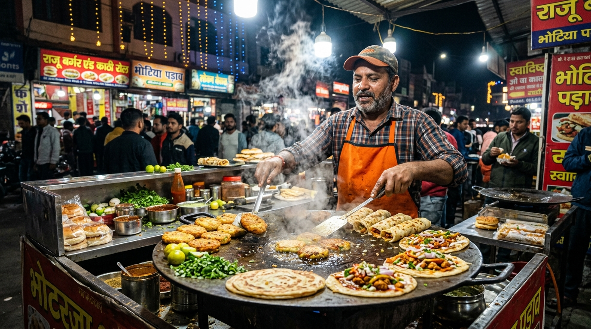

In the startup universe, building an elegant mobile app is only half the battle. The other half — the grittier, tougher half — is physical execution on the ground.
At Streat Eats, every steaming box of momos that arrives at your doorstep in under 30 minutes is the direct result of Lokesh Paneru’s relentless ground operations. At just 20 years of age, Lokesh serves as the Co-Founder and Head of Operations of Haldwani’s fastest-growing hyperlocal food startup.
⚡ Quick Facts About Lokesh Paneru
- Full Name: Lokesh Paneru
- Age: 20 Years Old
- Hometown: Haldwani, Uttarakhand, India
- Role: Co-Founder & Head of Operations at Streat Eats
- Responsibilities: Vendor Partnerships, Ground Fleet Logistics, Quality Control, Rider Training
- Connect: @lokesh.paneru on Instagram
The Street Hustle: Winning Vendor Trust One Stall at a Time
Street food vendors in Indian cities are legendary for their craftsmanship, but they can be rightfully sceptical of technological promises. Many stall owners in Haldwani have operated their businesses for 10 to 25 years with traditional cash-in-hand counter sales.
When Lokesh Paneru first stepped out to onboard Haldwani’s iconic stalls onto Streat Eats, he didn’t use fancy corporate jargon. Having eaten at these stalls throughout his childhood, Lokesh approached each vendor with genuine respect and local familiarity.
"Our vendors are master chefs of their craft. My promise to them was simple: We will never inflate your prices, we will never delay your payouts, and we will bring your authentic food to families who cannot step out."
— Lokesh Paneru, Co-Founder & Head of Operations
Through sheer persistence, Lokesh on-boarded over 15 premier street food stalls across Bhotia Parao, Nagar Palika Chauraha, Mukhani, and Kaladhungi Road within months.

Cracking the 30-Minute Delivery Puzzle in Haldwani
Haldwani presents unique logistical challenges: busy market intersections, narrow inner residential gallis, seasonal mountain rains, and fluctuating evening traffic flows.
To maintain a strict 30-minute delivery benchmark, Lokesh engineered a hyper-efficient hub-and-spoke dispatch model:
- Zonal Fleet Positioning: Riders are strategically stationed near high-density stall clusters like Bhotia Parao and Tikonia, cutting pickup latency to under 4 minutes.
- Insulated Heat-Lock Packaging: Specialized food-safe thermal containers ensure momos remain steaming hot and crispy items like burgers and samosas don't get soggy during transit.
- Local Shortcut Navigation: Unlike standard GPS maps that struggle in small bylanes, Lokesh personally trained the rider fleet on local bypasses and traffic-free routes.
Building the Partnership with Karan Kumar
Great startups are formed by complementary co-founders. While Karan Kumar (Founder & CEO) architected the software, database, and customer app, Lokesh Paneru brought the ground-level force that transformed software into an everyday reality for Haldwani's citizens.
Together, Karan (21) and Lokesh (20) have demonstrated that youth, ambition, and deep love for their hometown can create a thriving business model that competes with multinational food apps while retaining a 100% grassroots soul.